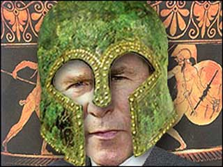

The Bushiad and The Idyossey
The epic battle of testosterone, circa 2003.
- - - - - - - - - -
by Victor Littlebear
The following is the first chapter of the 24 chapter opus.
December's rosy-fingered dawn gently
Brushes sleep from his dream-soaked eyes,
But Resolute George wakes up royally pissed,
Roiling with rage, his insides scorched
By a hot and furious furnace, welding
Purpose ever tighter to his heart.
What insult, humiliation or disgrace
Could cast his soul so completely in revenge?
His pain and family’s lust for vengeance
Are hidden under wraps of stately words, yet
Placed before a world transfixed by
Calls for guts and glory in the kingdom
Over breakfast, Sly Ashcroft, who taps into
George’s mind much as he does his phone,
Lays down his counsel to this Prince, this
Leader risen through his family’s honor to
Take his place in hallowed history,
And wield the presidential scepter.
Sly Ashcroft, whose panoptic plan
Seduces hearts and minds through fear,
Waits eagerly for Armageddon when
Saved souls will reign with God above. His
Inner vision colors all he sees with
An impenetrable, opaque shroud of faith.
Sly Ashcroft whispers, "Hold fast,
My Prince, the moment approaches. Our path
Is through strength. Power is manifest and
He who weakens falls behind, will lose the race
To promised land where victory brings acclaim
And legends of leadership are carved in stone. Hold fast!"
But Resolute George is also Simple,
Distracted, he looks through the curtained window,
Day dreams of Crawford, Texas...trees to prune,
Littered footpaths to be raked, Creeks
That should be cleared before the rains;
Then Resolute again, he shakes his head.
"Mark my words," he says pale-faced, "Saddam
Has breathed his last, and only when
He’s rot or ashes, stinking - better yet
Dismembered before a crowd and fed to dogs - then
Will I enjoy some peaceful sleep, undisturbed
By my family’s cries for vengeance."
He kneels, Oval Office now his chapel,
Prays for strength. Eyes clenched tight,
He asks God to bless his holy mission. "Dear Lord,
Restore my family’s honor cruelly taken by Saddam.
Help me to prevail and with your strength,
Vanquish opposition in heat of righteous battle."
Sly Ashcroft, counsel given, satisfied
George is held in sway, takes his leave
Not looking back, afraid that Simple George
Might be turned towards him, trance broken,
Baseball stats, chili dogs and dreams of ice-cold beer
Replacing waves of vengeful thought.
Meanwhile Stealthy Saddam sleeps soundly,
Surrounded by dogs and loyal men.
He dreams of portraits of himself, great
Murals filling public spaces, titanic statues
Towering in vast halls, hands raised in salutation
Welcoming his subjects inside the palace walls.
In his dreams, he provides his only counsel,
All others dreamt reflect his face and voice
And offer their concurrence as a chorus. He need
Not breathe, nor beat his heart, nor churn his gut.
Dreaming Saddam is stillness, a portrait
Patient, waiting for the old king’s son to strike.
Twelve years of stalemate, why not twelve more,
He asks in sleep. Why not twenty more, not much
By Babylonian standards. This cradle of civilization endures.
If Allah’s protecting anyone it’s me, and why not? I'm
Strong, good-looking and can get the girls, he dreams,
A scud missile rising in his groin.
Eyes opening in the darkness, his hand
Brushes his pillow, Egyptian cotton, from Mubarak
For his birthday, used this very night, then discarded,
Burned and ashes scattered. His head has lain upon it;
Royalty must be safeguarded, even flakes of skin
And orphaned strands of hair and sweat.
I’m glad I’m me, he thinks, and strokes his body,
Halting at his loins where stands his mighty minaret,
Symbol of his manhood, and his power over men,
An inspiration to himself and all who love him -
His guide, his mentor, counsel and
Adviser second to none.
No astrologer casts charts for Stealthy Saddam,
He leans on no family honor, like Simple George.
"I am the chosen one", he whispers to himself,
While in his hand his erection strains at the cloth,
And counsel comes that he should move again
For safety’s sake, and a fresh pillow.
And in that posture, hand ‘round its head,
Saddam falls back to sleep till dawn, when
Birdsong lightly lifts him from his slumber, and
Rising he relieves himself in a golden bowl,
Filled with perfumed water and fresh rose petals,
Picked by loyal subjects during Baghdad’s silent night.
Read the entire work
|